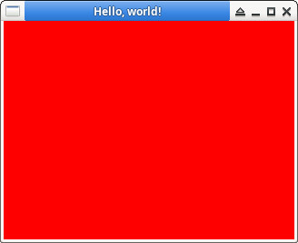

參考資訊：
https://www.glfw.org/docs/3.3/index.html
main.c
#include <stdio.h>
#include <GLFW/glfw3.h>
int main(int argc, char *argv[])
{
GLFWwindow *win = NULL;
glfwInit();
win = glfwCreateWindow(320, 240, "Hello, world!", NULL, NULL);
glfwMakeContextCurrent(win);
while (!glfwWindowShouldClose(win)) {
glClearColor(1.0, 0, 0, 1.0);
glClear(GL_COLOR_BUFFER_BIT);
glfwSwapBuffers(win);
glfwPollEvents();
}
glfwTerminate();
return 0;
}
編譯、執行
$ gcc main.c -o main -lglfw -lGL $ ./main
